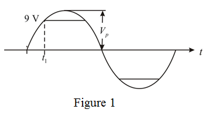

From Figure 1, at time  , the sinusoidal signal value is
, the sinusoidal signal value is  .
.
For an undistorted output, write the range of input voltage.
Therefore, the output signal extremes at the edge of clipping for the input voltage peak value are.
Draw the output signal waveform.

From Figure 1, at time , the sinusoidal signal value is .
When clipping is of time, then  of time normal wave appears.
of time normal wave appears.

Determine the peak value of input signal.
Therefore, the peak value of input signal is .
When clipping is of time, then  of time normal wave appears.
of time normal wave appears.
Determine the peak value of input signal.
Therefore, the peak value of input signal is .